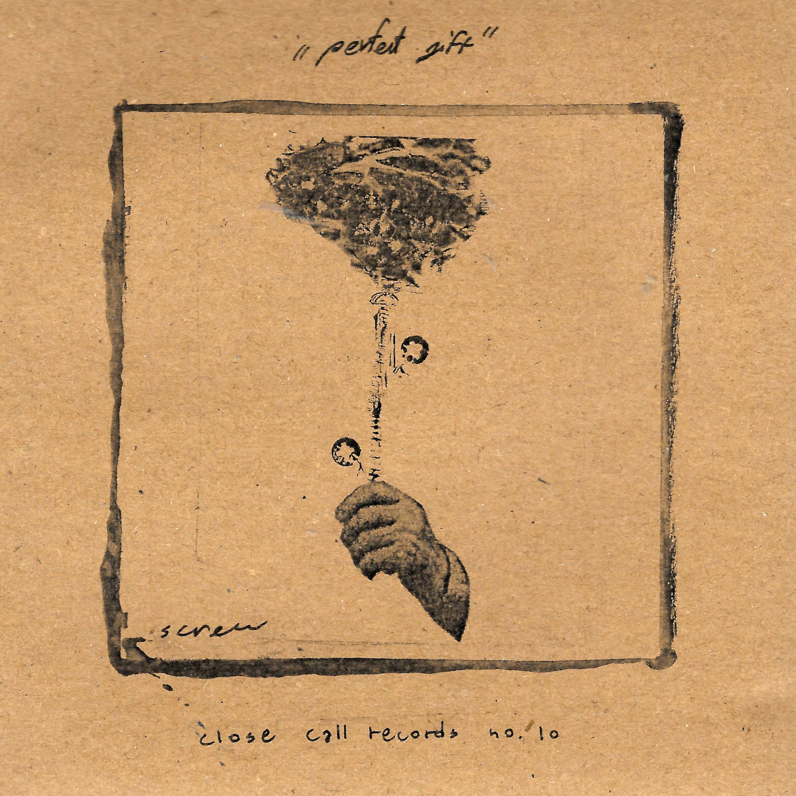
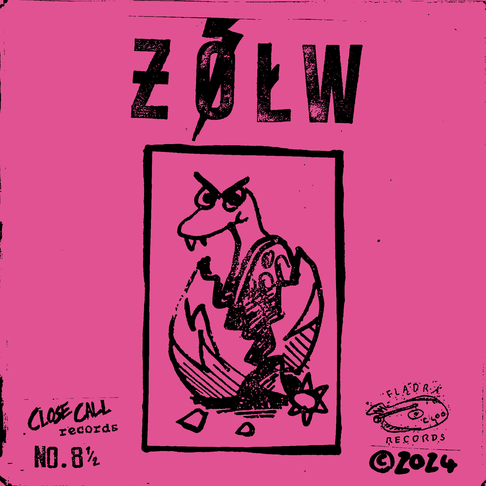
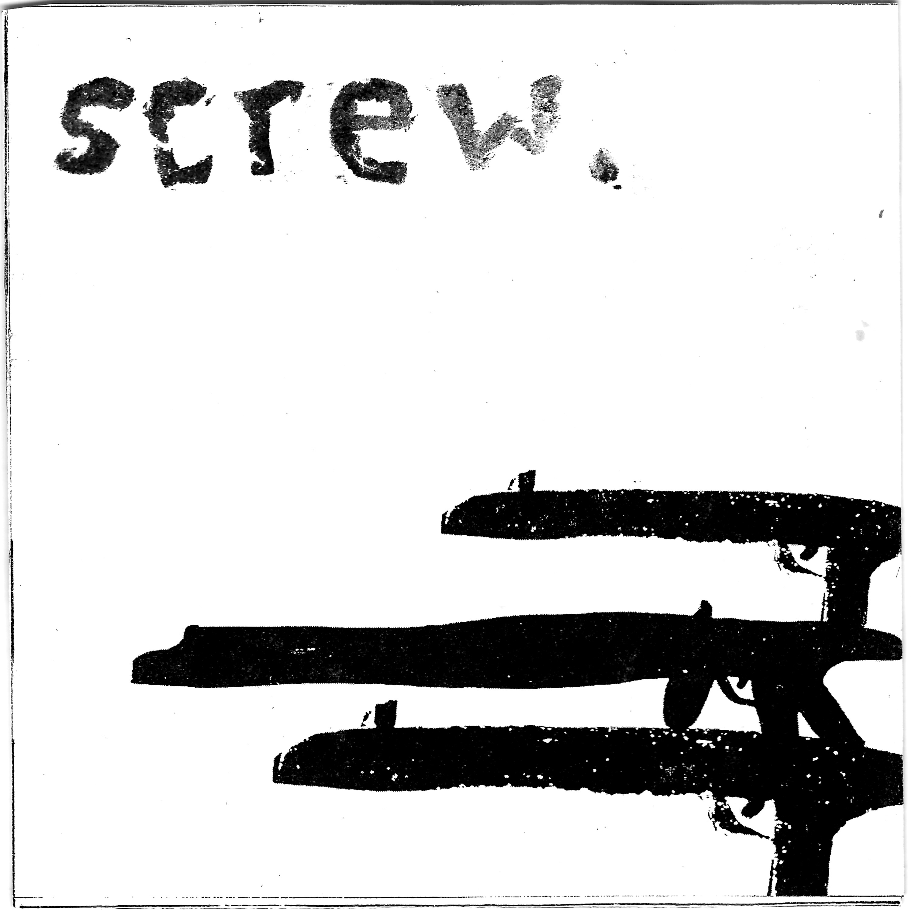
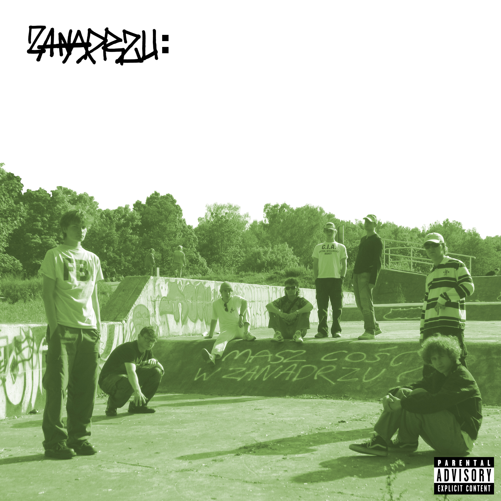
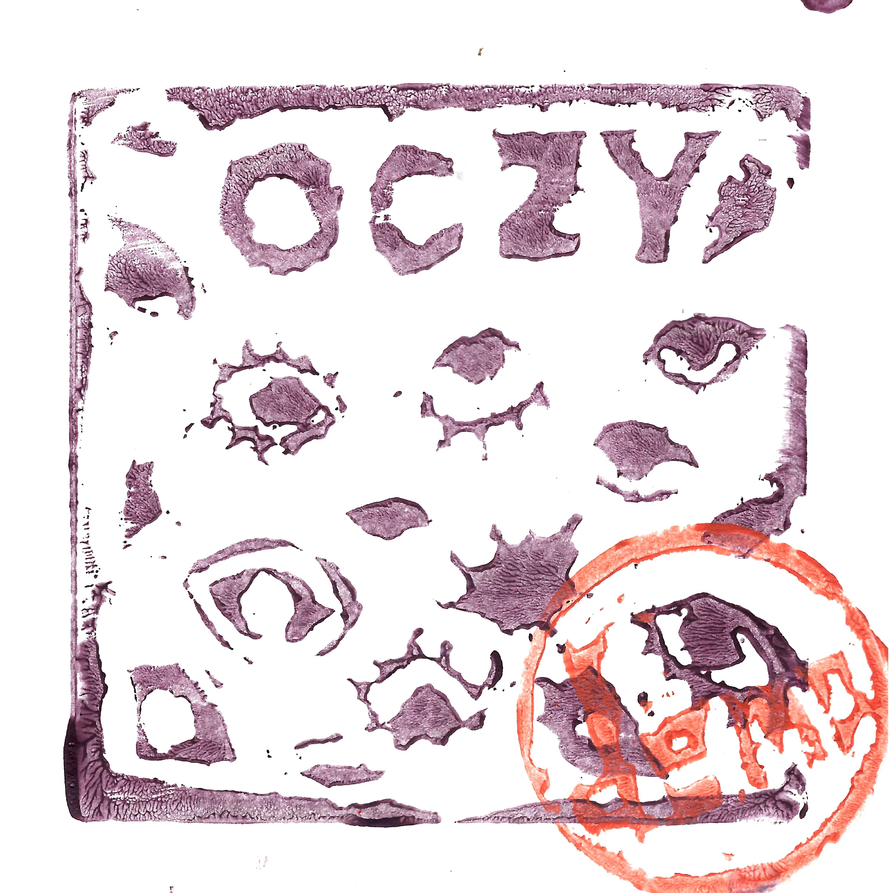

Kliknij by poczytać o płycie!
 HUNG
HUNG -
I Got Bored With This City E.P.
Close Call no.11 (2024)

Screw - Perfect Gift E.P.
Close Call no.10 (2024)

ƵÓŁW - S/T L.P.
Close Call no.8½ / Flądra Records (2024)

Screw - S/T E.P.
Close Call no.8 (2024)
 Sieczkarnia
Sieczkarnia -
Ostatnie podrygi teraźniejszości L.P.
Close Call no.7 (2023)

ZANADRZU - S/T L.P.
Close Call no.6½ / Piwnica Stuff (2023)
 Oczy
Oczy -
MEGARABANOWAPATOBOMBAUDAROWA E.P.
Close Call no.5 (2022)

Oczy - Demo
Close Call no.4 (2022)
 Sieczkarnia
Sieczkarnia - Narodziny Agonii L.P.
Close Call no.3 (2022)
Copyright © 2025 Close Call Records / Michał Czapski. All Rights Reserved.